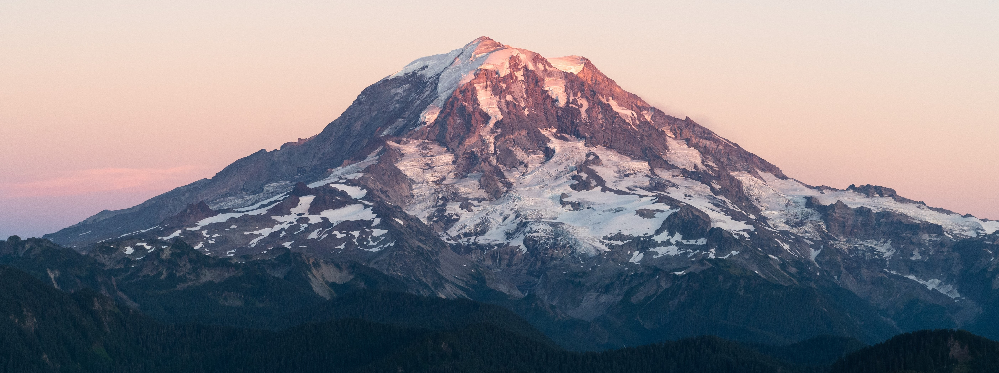
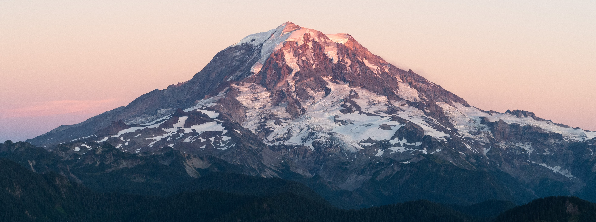
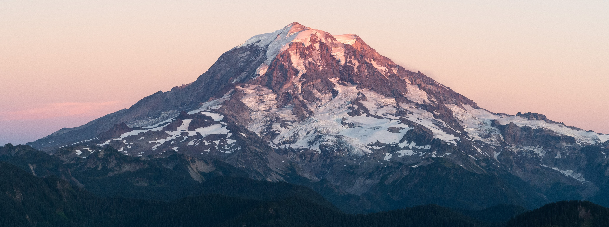
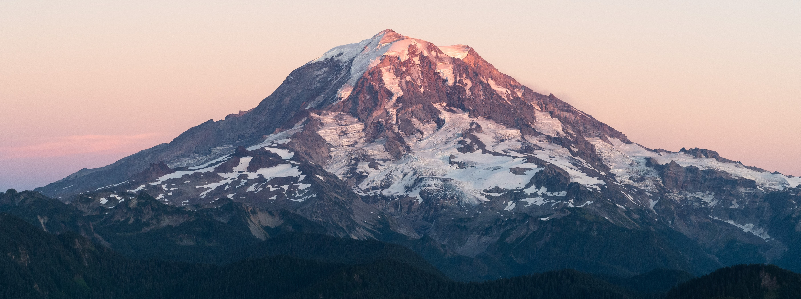

Home to about 7.7 million people and the 20th largest state, Washington has a vast variety of natural landscapes. From wonderous mountains like Mt. Rainier to scenic views from Alki Beach, residents can visit many hikes and trails to explore! The state is also home to a few big tech giants such as Amazon, Microsoft, and Starbucks. Washington was admitted into the Union on November 11, 1889 as the 42nd state.
Source: www.census.gov
| State Symbol | Name | Details |
|---|---|---|
| Tree | Western Hemlock | A popular species of hemlock and native to the coast of western Washington | Fruit | Apple | The nation's largest apple-producing state |
| Bird | Willow Goldfinch | A smaller type of bird with a yellow body and black wings |
Source: State Symbol